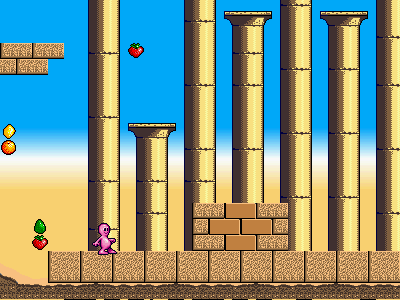
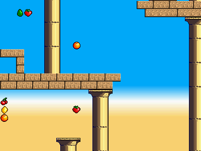
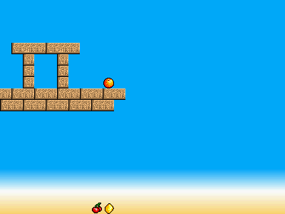
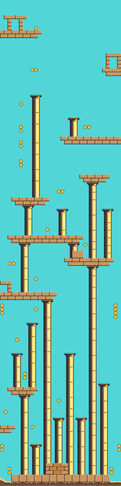

Background color register¶
Background character colors have a transparency bit. When this bit is set, the hardware takes the color from the BG_COLOR register.
This is useful for situations when a color is shared across the whole background and you want to update it at once - for a flash or fade, for example.
But by using a small coprocessor program (bgstripes.fs) to load the background color register with a new value for each raster line, you can use it like another graphic layer behind the character graphics.
The microprogram reads a palette of 64 colors from memory, and draws them over 64 raster lines. With a suitable desert-themed 64 color gradient (blue to white to sand) loaded, the result is:
The video above is this background gradient, plus:
- character graphics for the scrolling background image of blocks and columns
- 16-color sprites for the standing character and fruit
The parallax scroll gives an impression of height: the gradient slowly moves down as the camera climbs up. At the top of the level the background is mostly sky:
  {kind=link}
{kind=link}
{kind=link}
{kind=link}
bgstripes.fs¶
Last modified $Date: 2011-05-13 11:32:42 -0700 (Fri, 13 May 2011) $